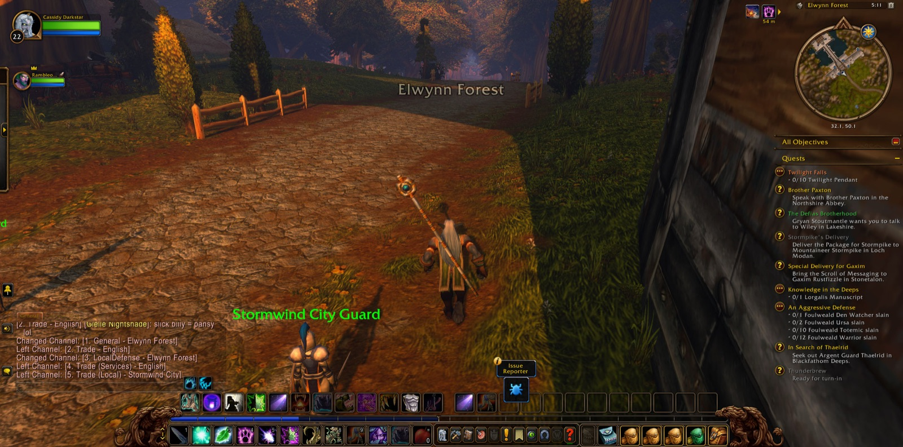
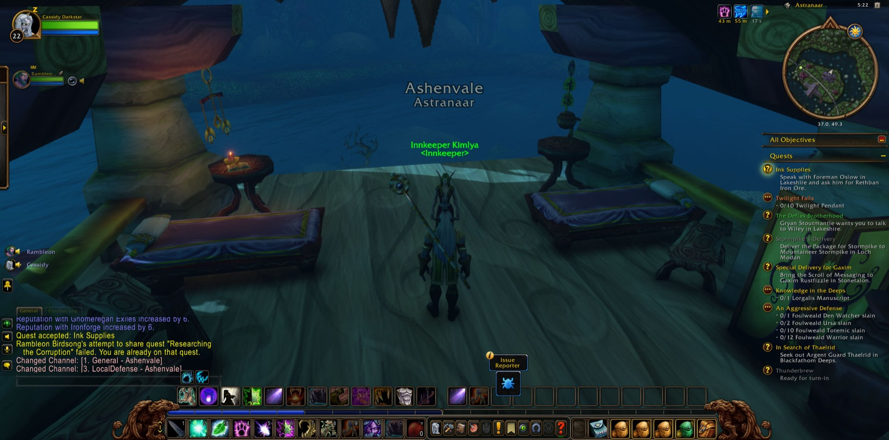
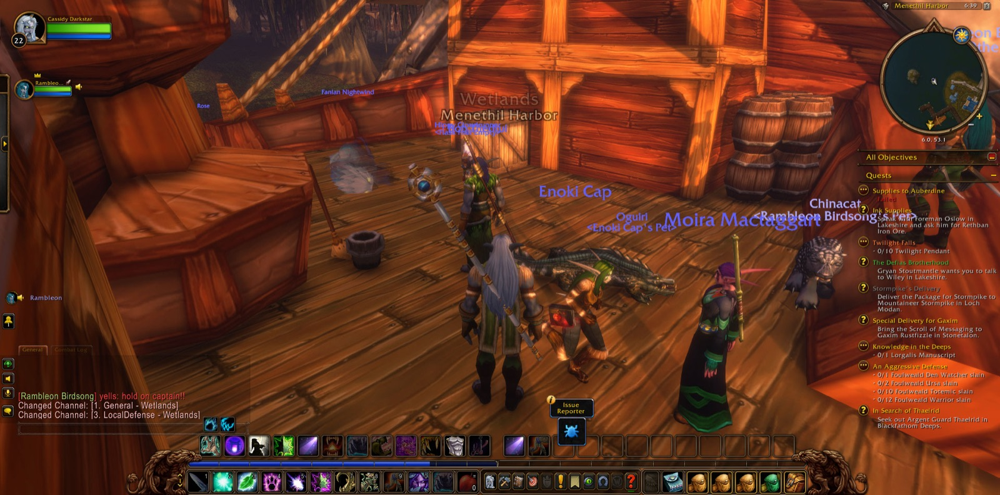
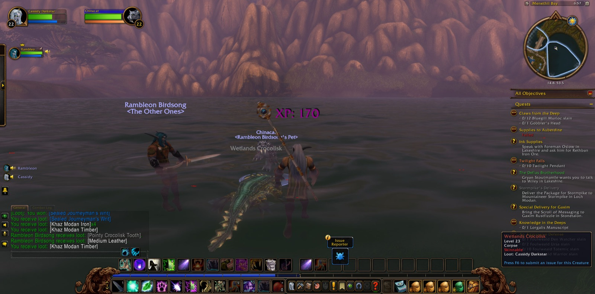

Cassidy Darkstar went first to Nighthaven in Moonglade, and a picture was taken as he came into that place. There he took up the Trial of the Lake and went out by Lake Elune'ara to the Shrine of Remulos, where the trial was accounted done. He took up the Trial of the Sea Lion and bore it with him. Then he went down into the Stormrage Barrow Dens, and from them he brought out the three relics that the Great Cat Spirit required: the Relic of the Silent Shadow, the Relic of the Fang and the Relic of the Claw. The blessings of the Great Cat Spirit were given to him in Nighthaven, and he was sent on to Darnassus. He passed by Timbermaw Hold, Astranaar and Maestra's Post, along the Long Wash and through Auberdine, and over the Veiled Sea to Rut'theran Village. In the Cenarion Enclave that errand was ended.


From Auberdine he crossed the water to Stormwind Harbor. In The Canals of Stormwind he joined with Rambleon, a hunter, and they walked much of the long road after together. They went out through the Valley of Heroes into Elwynn Forest, by Goldshire to Northshire Valley, and in the Library Wing Cassidy finished the matter of Brother Paxton and was asked for Ink Supplies. Then he was in Ashenvale again. At the Shrine of Aessina and Maestra's Post he took up Supplies to Auberdine, and on the road north he overcame the Dark Strand Assassins and the Forsaken Scouts, and with them Balizar the Umbrage, Caedakar the Vicious and Aligar the Tormentor. At The Master's Glaive the Twilight Thugs and Twilight Disciples fell before him. He came to Remtravel's Excavation, and then to The Zoram Strand, where Wrathtail Sorceress and Wave Rider, Mystlash Hydra and Spined Crawler were slain. He went into Blackfathom Deeps, past Murkshallow Snapclaws and Blindlight Murlocs, as far as The Drowned Sacellum, and many pictures were taken there. In that deep place he fell once, and rose again in Twilight Vale.


He took ship from Auberdine to Menethil Harbor in the Wetlands, and there many errands were laid upon him. In Menethil Bay and the Black Channel Marsh he hunted crocolisks, young and grown and giant, until the skins were gathered and the Apprentice's Duties were done. He gathered Khaz Modan Timber and Khaz Modan Iron for the Spoils of War. In Bluegill Marsh he slew the Bluegill Murlocs that Claws from the Deep demanded, and Gobbler with them, and brought back Gobbler's Head. Then he searched the hovels for goods that had been taken. Zogg, a shaman, joined him there for a short while. In Bluegill Marsh Cassidy came into new strength and reached his twenty-third level, and a picture marked it. Soon after, Rambleon and Zogg went their own ways.


Out of the last hovel he had brought the Menethil Statuette. He bore it to Karl Boran and then to Captain Stoutfist in Menethil Keep, and from there it was given him to carry to Highlord Bolvar Fordragon in Stormwind Keep, as A Friend of the Family. He took up War Banners and From the Ashes as well. Last of all he came into the Deepwater Tavern, and a final picture was taken there. The statuette was still in his keeping, and the road to Stormwind lay open before him.

